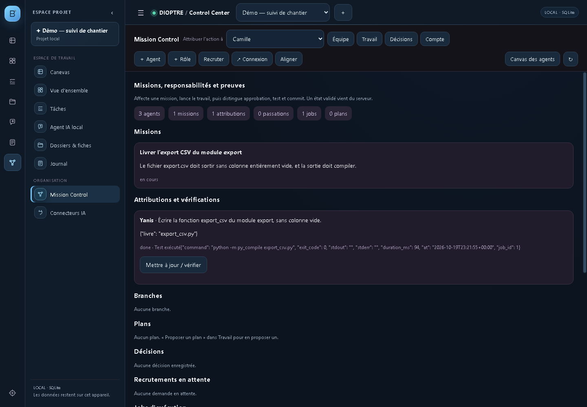
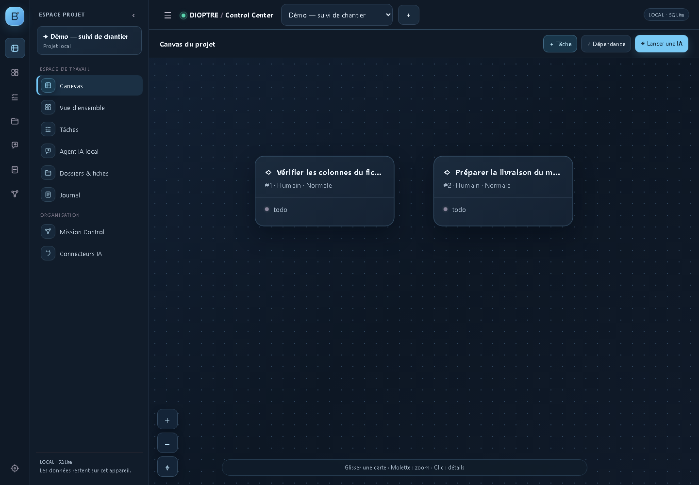

Vos projets, vos agents IA, vos preuves.
Missions, tâches et agents, avec des preuves de livraison. Stockage local ; IA locale avec Ollama ou services cloud facultatifs.
- Stockage sur votre PC
- Assistant IA sur votre PC
- Sauvegardes automatiques
- Accès protégé par jeton


Ce que fait l'application
Une seule interface pour piloter un projet et les assistants qui y travaillent, sans dépendre d'un service en ligne.
Canvas de projet
Tâches, dépendances et priorités sur un plan de travail déplaçable, avec zoom et recentrage.
Mission Control
Agents, missions, attributions, revues et preuves : chaque décision laisse une trace.
Assistant IA local
Chat avec choix du modèle installé, réponses ancrées sur les données réelles du projet.
Connecteurs
Ollama fonctionne localement. Si vous activez OpenAI, Anthropic ou Gemini, vos demandes sont transmises au fournisseur choisi. MCP reste facultatif.
Documents et sauvegardes
Import de fichiers, sauvegarde ZIP avec empreintes, restauration sans écrasement.
Sécurité locale
Jeton de session, jeton administrateur, exécution en bac à sable, MCP verrouillé par défaut.
À quoi ça ressemble
Captures réelles de DIOPTRE 2.8.4 sur une base de démonstration isolée. Le travail présenté a été compilé et sa preuve enregistrée.


Télécharger
L'installateur pose l'application sur votre PC, sans base de données ni secret. Vos données restent chez vous.
DIOPTRE 2.8.4 — Windows
Installateur Windows de 2 Mo, application 2.8.4, installateur révision 1 du 20 octobre 2026. Cette révision vérifie Python avant toute copie.
↓ Télécharger l'installateur Double-cliquez ensuite sur le fichier téléchargé : il installe DIOPTRE et crée un raccourci sur le Bureau.Taille : 2151047 octets (2.05 Mo)
SHA-256 : ce007c58e79c6ec30df0b2b5b5c648414d8fb60f80e4dc9cd16fb8403bab4ab2
SHA-256 : 93d0b10dfc82f1e4deae58322fd71647b039e69290a105d116410a067e3c9c33
Ce que fait l'installateur
- installe l'application dans votre profil Windows
- crée un raccourci DIOPTRE sur le Bureau et dans le menu Démarrer
- ajoute un désinstalleur, comme n'importe quel logiciel
- inclut un mode démonstration : un projet complet, prêt à explorer
- ne demande aucun droit administrateur
Aucune base, aucun journal, aucun jeton dans l'installateur.
Avant de commencer
Windows 10 ou 11
L'application est une application de bureau Windows ; elle n'existe pas en version web publique.
Python 3.14
À installer une fois depuis python.org. Cochez « Add python.exe to PATH » pendant l'installation.
Ollama (facultatif)
Nécessaire seulement pour le chat avec un modèle local. Sans lui, le reste de l'application fonctionne.